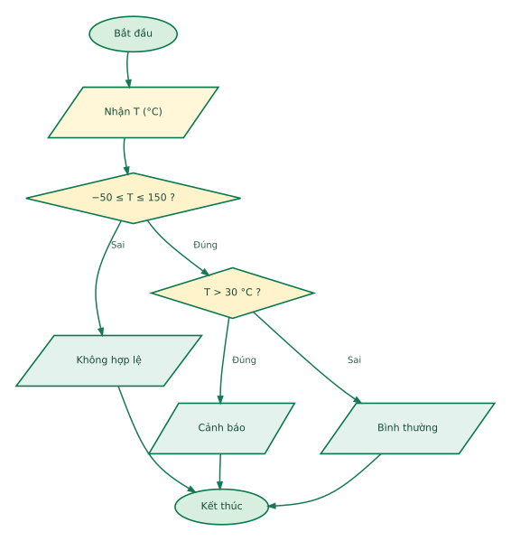

Khóa học / Mô-đun 1 / Bài 03
01 Mục tiêu và kiến thức tiên quyết
- Diễn giải đúng toán tử so sánh, logic và các nhánh if/elif/else.
- Lập bảng quyết định với giá trị dưới, bằng và trên ngưỡng.
- Xử lý dữ liệu không hợp lệ trước khi áp dụng quy tắc phân loại.
Kiến thức tiên quyết: bài trước, kiến thức lập trình tương ứng.
02 Tình huống kỹ thuật
Xây dựng thuật toán cảnh báo từ giá trị nhiệt độ nhập vào. Ngưỡng minh họa của bài là 30 °C: chỉ cảnh báo khi nhiệt độ lớn hơn 30 °C, đồng thời từ chối dữ liệu nằm ngoài miền quy ước.
Nhiệt độ T = 31,0 °C; ngưỡng cảnh báo T_c = 30 °C; miền minh họa −50…150 °C.
Chuỗi thông báo: KHÔNG HỢP LỆ, CẢNH BÁO hoặc BÌNH THƯỜNG.
03 Kiến thức và thuật ngữ cốt lõi
Điều kiện Boolean
Các phép so sánh trả về True/False. Dấu = là phép gán, còn == so sánh bằng; and/or/not phối hợp điều kiện.
Trình tự điều kiện
Các nhánh elif được xét từ trên xuống; nhánh đầu tiên thỏa mãn được thực hiện. Đặt kiểm tra dữ liệu không hợp lệ trước quy tắc phân loại giúp không gán nhãn cho số đo phi lý.
Mức cảnh báo giả định
30 °C là ngưỡng giảng dạy do bài tập đặt ra, không phải ngưỡng bảo vệ của máy lạnh hay động cơ. Điều kiện > 30 khác với >= 30; phép thử tại đúng 30 là bắt buộc.
Xử lý lỗi
Ở giai đoạn này dùng giá trị đã cho; khi dùng input() phải phân biệt lỗi chuyển đổi chuỗi với lỗi giá trị ngoài miền chấp nhận.
04 Xây dựng và kiểm tra thuật toán
Trước khi xem chương trình, hãy đọc dữ liệu đầu vào, chọn điều kiện rẽ nhánh hoặc lặp, rồi dự đoán kết quả. Mã giả mô tả ý nghĩa thuật toán; không phải cú pháp Python thực thi được.

Mã giả
Lần vết các bước phân tích
Đây là lần vết các dòng mã giả, không phải trình thông dịch Python. Tự kiểm tra nhánh điều kiện bằng bảng ca kiểm thử ở mục 07.
05 Chương trình Python đã kiểm tra
Đọc mã, dự đoán kết quả và chạy tệp bai_03.py trong thư mục code. Các mã bài 9 trở lên có thể cần dữ liệu đi kèm từ thư mục data.
nhiet_do_c = 31.0
nguong_c = 30.0
if not -50 <= nhiet_do_c <= 150:
trang_thai = "KHONG HOP LE"
elif nhiet_do_c > nguong_c:
trang_thai = "CANH BAO"
else:
trang_thai = "BINH THUONG"
print(trang_thai)
06 Thử nghiệm tham số có hướng dẫn
Thay đổi đầu vào để kiểm tra trực giác và đối chiếu với kết quả dự đoán. Trình khám phá này được lập trình lại bằng JavaScript theo bài toán minh họa, không phải kết quả chạy mã Python.
07 Thực hành và kiểm thử
Thực hiện các nhiệm vụ theo thứ tự từ có hướng dẫn đến độc lập; ghi lại kết quả thực tế của chương trình và so sánh với kết quả kỳ vọng.
- Lập bảng quyết định cho ngưỡng 30 °C, nêu rõ dấu > và >=.
- Bổ sung chuỗi đầu vào và dùng try/except để bắt lỗi không phải số.
- Thay đổi ngưỡng trong giả thiết, chạy lại đầy đủ kiểm thử biên.
Bảng kiểm thử bắt buộc
| Ca kiểm thử | Dữ liệu/điều kiện | Kết quả kỳ vọng |
|---|---|---|
| Dưới ngưỡng | T = 29 °C | Bình thường |
| Bằng ngưỡng | T = 30 °C | Bình thường |
| Vượt ngưỡng | T = 31 °C | Cảnh báo |
| Ngoài miền | T = 180 °C | Không hợp lệ |
08 Vận dụng vào chuyên ngành
Phân loại trạng thái nhiệt độ giả định của tủ lạnh; không dùng ngưỡng này trực tiếp cho bảo vệ thiết bị.
Phân loại dữ liệu nhiệt độ động cơ trên bộ dữ liệu mô phỏng; không tuyên bố chẩn đoán hư hỏng.
09 Trắc nghiệm và phản hồi
Mỗi câu có bốn phương án A/B/C/D. Chọn một phương án cho mỗi câu rồi nhấn Chấm và giải thích để xem vì sao từng phương án đúng hoặc chưa phù hợp.
Rubric tham khảo (100 điểm)
| Thành phần | Điểm |
|---|---|
| Đặc tả dữ liệu, đơn vị, giả thiết | 20 |
| Mã giả, trình tự thuật toán | 20 |
| Mã Python và tổ chức hàm/dữ liệu | 25 |
| Kiểm thử, đối chiếu, phân tích sai số | 25 |
| Giải thích và đề xuất cải tiến | 10 |
10 Nhật ký học tập và đánh dấu tiến độ
Tiến độ và ghi chép chỉ lưu trong trình duyệt hiện tại; không đồng bộ với hệ thống điểm của trường.
11 Tài liệu tham khảo và nguồn
| Nguồn | Vai trò và phạm vi sử dụng |
|---|---|
| Pythonlearn-03-Conditional.pptx | C. Severance, Python for Everybody — Chương 3, rẽ nhánh và xử lý ngoại lệ. |
| BAI THUC HANH PYTHON CO BAN 2022.pdf | Khoa CNTT, bài thực hành Python cơ bản — nhập/xuất, điều khiển, dữ liệu, hàm và tổng hợp. |
| Python 3 Documentation | Tài liệu chuẩn của ngôn ngữ Python 3. |
Học liệu mới được viết lại theo định hướng sư phạm. Không trích lại nguyên văn hoặc phân phối các slide/sách gốc trong gói website.